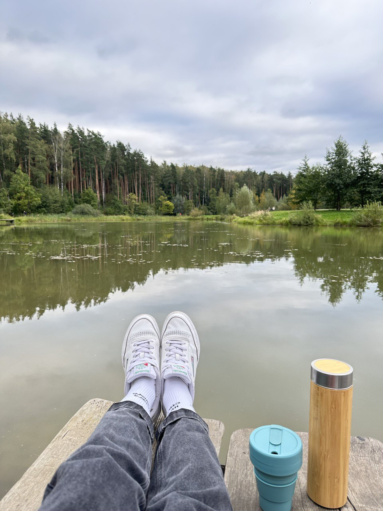
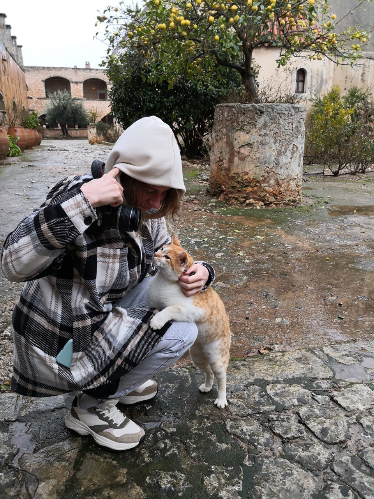

Привет! Я Катерина. Мне уже не 18, но я все-еще полна оптимизма и желания что-то менять. Например, профессию... или шрифты на твоем сайте
В прошлом - успешный доктор, принявший решение уйти из медицины и стать не менее успешным Frontend-разработчиком.
Люблю путешествия, бег по утрам, хайкинг, хороший кофе с круассаном, котиков/собачек и фотографировать
 